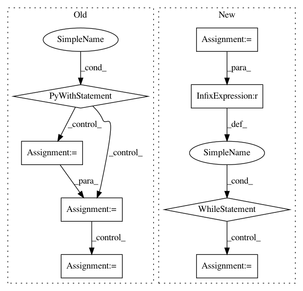

66ee118a455c5e267566f0e3fdc482985f803df0,ci/build_windows.py,,windows_build,#Any#,139
Before Change
logging.info("Found MXNet root: {}".format(mxnet_root))
url = "https://github.com/Kitware/CMake/releases/download/v3.16.1/cmake-3.16.1-win64-x64.zip"
with tempfile.TemporaryDirectory() as tmpdir:
cmake_file_path = download_file(url, tmpdir)
with zipfile.ZipFile(cmake_file_path, "r") as zip_ref:
// Create $tmpdir\cmake-3.16.1-win64-x64\bin\cmake.exe
zip_ref.extractall(tmpdir)
with remember_cwd():
os.chdir(path)
cmd = "\"{}\" && {} -G \"NMake Makefiles JOM\" {} {}".format(
args.vcvars,
os.path.join(tmpdir, "cmake-3.16.1-win64-x64", "bin", "cmake.exe"),
CMAKE_FLAGS[args.flavour], mxnet_root)
logging.info("Generating project with CMake:\n{}".format(cmd))
check_call(cmd, shell=True)
cmd = "\"{}\" && jom".format(args.vcvars)
logging.info("Building with jom:\n{}".format(cmd))
t0 = int(time.time())
check_call(cmd, shell=True)
logging.info(
"Build flavour: {} complete in directory: \"{}\"".format(
args.flavour, os.path.abspath(path)))
logging.info("Build took {}".format(
datetime.timedelta(seconds=int(time.time() - t0))))
windows_package(args)
def windows_package(args):
After Change
path = args.output
// cuda thrust + VS 2019 is flaky: try multiple times if fail
MAXIMUM_TRY = 5
build_try = 0
while build_try < MAXIMUM_TRY:
if os.path.exists(path):
shutil.rmtree(path)
os.makedirs(path, exist_ok=True)
mxnet_root = get_mxnet_root()
logging.info("Found MXNet root: {}".format(mxnet_root))
with remember_cwd():
os.chdir(path)
cmd = "\"{}\" && cmake -GNinja {} {}".format(args.vcvars,
CMAKE_FLAGS[args.flavour],
mxnet_root)
logging.info("Generating project with CMake:\n{}".format(cmd))
check_call(cmd, shell=True)
cmd = "\"{}\" && ninja".format(args.vcvars)
logging.info("Building:\n{}".format(cmd))
t0 = int(time.time())
ret = call(cmd, shell=True)
if ret != 0:
build_try += 1
logging.info("{} build(s) have failed".format(build_try))
else:
logging.info("Build flavour: {} complete in directory: \"{}\"".format(args.flavour, os.path.abspath(path)))
logging.info("Build took {}".format(datetime.timedelta(seconds=int(time.time() - t0))))
break
windows_package(args)
def windows_package(args):
In pattern: SUPERPATTERN
Frequency: 3
Non-data size: 8
Instances
Project Name: apache/incubator-mxnet
Commit Name: 66ee118a455c5e267566f0e3fdc482985f803df0
Time: 2020-04-03
Author: lausen@amazon.com
File Name: ci/build_windows.py
Class Name:
Method Name: windows_build
Project Name: pantsbuild/pants
Commit Name: 7dcc1b532d21e47c98ba2422cab7d48360149f89
Time: 2013-10-06
Author: benjyw@gmail.com
File Name: src/python/twitter/pants/tasks/nailgun_task.py
Class Name: NailgunTask
Method Name: _await_nailgun_server
Project Name: pantsbuild/pants
Commit Name: 6101d42a47f4dca09a862090f7665bf83373f9d8
Time: 2013-07-29
Author: benjy@foursquare.com
File Name: src/python/twitter/pants/tasks/nailgun_task.py
Class Name: NailgunTask
Method Name: _await_nailgun_server